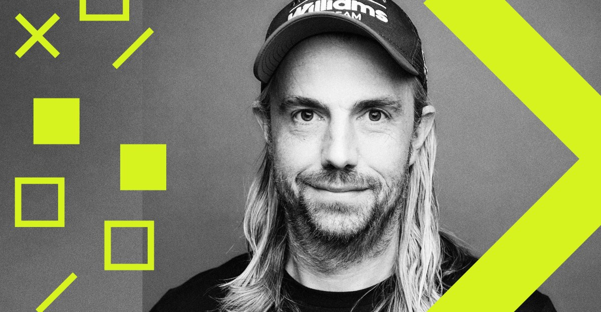

ה־SaaSpocalypse שלא קרה
מייק קנון־ברוקס מסביר למה AI לא מוחק את תוכנת הארגון, אלא מעלה את הרף: מוצר טוב יותר, עיצוב כתשתית, תפקידים רחבים יותר ובני אדם שבוחרים מה בכלל ראוי לבנות.

1. AI לא מעלים את העבודה, הוא מגדיל את הזרימה
פאטל מתחיל מהבטחת הקצה של מהפכת ה־AI: אולי מודל חזית פשוט יקבל גישה לכל המידע הארגוני, יפעיל את העסק וייתר שכבות של תוכנות, מנהלים וממשקים. קנון־ברוקס דוחה את הקפיצה הזאת. לדבריו, AI בהחלט יכול לבצע חלקים גדולים מתוך תהליך, אך הוא אינו מוחק את הצורך להבין מה קורה בתהליך כולו.
הדוגמה שלו היא חריגה בעסקת מכירה. מערכת יכולה לאשר אוטומטית בקשה שגרתית, למשל תשלום בתוך 45 יום במקום 30. חריגה מורכבת יותר עדיין דורשת שיפוט אנושי. גם אם AI מטפל ברוב המקרים, מישהו צריך לדעת כמה חריגות אושרו, היכן הן מצטברות, האם התהליך עומד ביעדים ואיפה נוצר סיכון.
מכאן מגיעה הטענה המהותית של Atlassian: ככל שסוכנים מבצעים יותר פעולות, נפח העבודה עולה והצורך ב״קריאות״ ארגונית גדל. Jira אינה המקום שבו מהנדס כותב קוד. היא שכבת הייחוס שמספרת לבני אדם ולסוכנים מה נעשה, למה, בידי מי ובאיזה מצב. AI לא בהכרח מחליש שכבה כזאת. הוא יכול להפוך אותה לחשובה יותר.
קנון־ברוקס מזכיר את הבנקאות הדיגיטלית כאזהרה מפני תחזיות ליניאריות. האפליקציה ביטלה פעולות שגרתיות בסניף, אך לא ביטלה את המערכת הבנקאית. היא הזיזה בני אדם ממשימות מכניות לשירותים מורכבים יותר והרחיבה את מה שהמערכת יכולה לעשות. מבחינתו, AI הוא עוד טכנולוגיה חזקה באותה מסורת, לא קסם שמוחק את חוקי הארגון.
2. פלטפורמה מתחת, מוצר ברור מעל
Atlassian מתארת את עצמה פחות כאוסף אפליקציות ויותר כפלטפורמה אחת שמקבלת ביטויים שונים. לפי קנון־ברוקס, יותר ממחצית ההשקעה במו״פ נמצאת בשכבה המשותפת: זהות, הרשאות, אוטומציה, חיפוש, ממשל, סיווג תוכן, שערי AI, לוגים ותשתיות צ׳אט.
ההיגיון ברור. לקוח אינו רוצה אוטומציה אחרת ב־Jira, ב־Confluence, ב־Loom ובמוצרי השירות. הוא רוצה יכולת עקבית, עם אותו מודל אבטחה ואותה התנהגות. במקביל, כל אפליקציה חייבת להישאר כלי שנבנה למשימה מסוימת. קנון־ברוקס משתמש באנלוגיה של פטיש, מסור ומברג: אסור למזג הכול לממשק כללי חסר אופי.
המתח הזה הוא לב האסטרטגיה. שכבת יכולות משותפת למטה, חוויית מוצר ממוקדת למעלה, והרכבה בין השכבות. עמוד Confluence יכול להיפתח בתוך Jira בלי לאבד את זהותו. Rovo יכול להופיע בכל מוצר, להבין את ההקשר המקומי ולהתנהג באופן עקבי. המשתמש מקבל כלי ייעודי, הארגון מקבל מערכת אחת.
3. עיצוב לא נעלם. הוא הופך לתשתית
אחת הנקודות החדות בראיון היא ההתנגדות לרעיון שיצירת קוד אוטומטית תייתר מעצבים. קנון־ברוקס אומר שהעיצוב נעשה חשוב יותר בעידן ה־AI, לא פחות. סמנכ״ל העיצוב של Atlassian מדווח אליו ויושב בצוות ההנהלה, והחברה מחזיקה כמה מנהלי עיצוב בכירים לשעבר מארגונים גדולים.
אבל תפקיד המעצב משתנה. קנון־ברוקס מחלק אותו לשניים: לבנות ולתחזק מערכת עיצוב שניתנת להרחבה, ולפתור את חמשת האחוזים הקשים ביותר של בעיות העיצוב. בעבר מערכת העיצוב הייתה אוסף רכיבים, מסמכים ותבניות. כיום Atlassian מחברת אליה CLI ו־MCP, כדי שאנשים וסוכני קוד יוכלו לייצר מוצר עקבי גם כשהם אינם מומחי עיצוב.
זו תפיסת מינוף. מעצב שמתקן מסך אחד משפר מסך אחד. מעצב שבונה תשתית עיצובית שמוטמעת בכל כלי היצירה של החברה יכול לשפר אלפי תוצרים. אותו היגיון חל על אבטחה, תמיכה, איכות וקוד. המומחים אינם נעלמים, הם בונים את המסילות שעליהן שאר הארגון נוסע מהר יותר.
4. התפקידים מתרחבים, המומחיות מתחדדת
מהנדסים, מעצבים ומנהלי מוצר אוהבים לנבא שהתפקידים האחרים ייעלמו. קנון־ברוקס רואה בזה ראיה הפוכה: אם כל מקצוע בטוח שה־AI יחליף דווקא את המקצוע שלידו, כנראה שהמציאות תהיה מורכבת יותר.
ב־Atlassian, לדבריו, יותר מנהלי מוצר ומעצבים כותבים קוד שמגיע מעבר לאב־טיפוס. גם אנשי שיווק, כספים ומשאבי אנוש בונים כלים. מהנדסים, מצדם, מסוגלים לגעת יותר בעיצוב. הגבולות בין התפקידים נעשים רכים יותר, והשיחה ביניהם מהירה ומלאה יותר.
אבל היכולת לגעת בתחום סמוך אינה מחליפה את המומחיות. מוצר ארגוני צריך אבטחה, מגבלות משפטיות, תאימות, רזידנסי של נתונים ואמינות בקנה מידה גדול. פתרון ביתי יכול להיות ״טוב מספיק״ ולהישבר מדי פעם. מערכת שמשרתת ארגון גדול אינה יכולה להישען על וייב־קודינג ללא מסילות.
לכן קנון־ברוקס צופה תפקידים רחבים יותר אך ״קוצניים״ יותר: אדם יכול לבצע יותר סוגי עבודה, ובו בזמן הערך של השיפוט העמוק שלו בתחום הליבה עולה. AI מרחיב את המעטפת. הוא לא מוחק את הליבה.
5. ארגון רחב יותר, לא כאוס של 50 כפיפים
הדיון מגיע גם למבנה הארגוני. Atlassian שילבה באופן חריג את פונקציית ה־IT וההנדסה הפנימית תחת מנהלת האנשים והפעלת ה־AI. הסיבה אינה אופנה ארגונית, אלא בעיה אחת שחוצה כישרון ומערכות: אי אפשר לשנות את תמהיל המיומנויות בלי לשנות במקביל הרשאות, כלי עבודה, שרתי MCP, מדיניות הוצאות טוקנים ותהליכים פנימיים.
פאטל מעמת את קנון־ברוקס עם חזונות רדיקליים יותר, כמו צוותים של 50 אנשים למנהל. התגובה מדודה. ארגונים כנראה יהיו רחבים ופחות עמוקים, ואנשים יהיו כלליים יותר. אבל מודל שעובד אצל מנהיג יוצא דופן אינו בהכרח ניתן לשכפול בכל חברה. עסק צריך עקביות, הבנה ומבנה שאינו דורש גאונות נדירה בכל צומת.
כדי להבין היכן AI באמת משנה מצבת כוח אדם, קנון־ברוקס מציע הבחנה בין פונקציות שמוגבלות בקלט לפונקציות שמוגבלות בתפוקה. משפטים ותמיכה מקבלים זרם עבודה חיצוני: מספר החוזים או הפניות אינו גדל רק כי AI נעשה יעיל יותר, ולכן אוטומציה יכולה לצמצם את המאמץ הדרוש. הנדסה, שיווק ויצירה כמעט תמיד מחזיקים יותר רעיונות מרוחב פס. שם AI יכול להגדיל תפוקה במקום רק לחסוך כוח אדם.
הראיון אינו עוקף את הסבב שבו Atlassian צמצמה כעשרה אחוזים מהחברה. קנון־ברוקס מציג זאת כשינוי יזום בתמהיל הכישורים ולא כהחלפה ישירה של אדם במודל. זו טענתו של המנכ״ל, לא בדיקה עצמאית של ההחלטה או השפעתה. מה שמעניין בגישתו הוא החיבור בין שינוי ארגוני לשינוי מערכתי: בלי תשתית חדשה, ״מיומנויות AI״ נשארות סיסמה.
6. מאסימטריה של מידע לאסימטריה של דמיון
המשפט החזק ביותר בראיון הוא שהיתרון התחרותי עובר מאסימטריה של מידע לאסימטריה של דמיון. במשך שנים כוח הגיע ממידע שאחרים לא החזיקו, מהבנה טובה יותר של המערכת או מהיכולת למצוא ידע נדיר. מודלי שפה הופכים חלק גדול מהגישה והעיבוד של מידע לזול.
מה שלא נעשה זול באותה מהירות הוא היכולת לבחור יעד, לדמיין מוצר ולהחליט איזו בעיה שווה לפתור. מודל יכול לייצר תוכן, לסכם מסמכים ולבצע משימות. הוא לא התעורר והחליט להקים את Atlassian. גם ניסוי של סוכן שמנהל מכונת חטיפים החל בהחלטה אנושית לנסות משהו מוזר וללמוד ממנו.
זהו תיקון חשוב לשיח על פרודוקטיביות. אם כולם מקבלים יכולת כתיבה, קידוד וניתוח חזקה, השאלה אינה רק מי מפיק יותר. השאלה היא מי מכוון את היכולת הזאת לבעיה משמעותית, מחבר אותה לטעם ולשיפוט ומסוגל לסחוף ארגון למסלול חדש.
7. למה Headless בלבד הוא מלכודת
תזת ה־SaaSpocalypse אומרת שממשקי התוכנה יאבדו חשיבות. הסוכן יקרא נתונים דרך API או MCP, יחבר מערכות ישנות ויבנה למשתמש שכבת ביניים חדשה. קנון־ברוקס מקבל את הצורך בחיבוריות, אבל קורא לעולם Headless טהור ״חסר מוח״.
Atlassian עצמה מפעילה שרת MCP ו־CLI בשימוש רחב. לפי הנתונים שקנון־ברוקס מצטט, לקוחות שמשתמשים בהם יוצרים יותר פריטים ב־Jira, מגדילים מושבים מהר יותר ומצמיחים ARR בקצב כפול מלקוחות שאינם משתמשים בהם. יותר מ־98% ממשתמשי ה־MCP משתמשים גם בממשק. אלה נתוני חברה שהוצגו בראיון, ללא מתודולוגיה מלאה.
המסקנה שלו אינה ש־MCP חסר חשיבות. להפך. חיבור בין כלים הוא קריטי, אבל מוצר שמוותר על הממשק שלו והופך לשרת נתונים בלבד מוותר בהדרגה גם על הערך שלו. משתמשים עדיין צריכים לראות תהליך, להבין מצב, להתערב בחריגה, לבחור כיוון ולתת אמון בתוצאה.
גם רעיון ״מגדל הפיקוח״ האחד לכל הארגון נדחה. Atlassian אינה רוצה להיות המערכת היחידה, אלא תחנת רכבת מרכזית המחוברת היטב ל־Figma, Salesforce, ServiceNow, Google Drive, Teams, קוד ומערכות נוספות. הקישורים הללו בונים גרף הקשר. בעידן הסוכנים, מי שמבין את ההקשר בין הכלים עשוי להיות בעל ערך רב יותר ממי שרק מחזיק בעוד מסד נתונים.
8. הצ׳אטבוט אינו הממשק הסופי
קנון־ברוקס אינו מאמין שכל העבודה תעבור לחלון שיחה. צ׳אט יישאר רכיב חשוב, אך הוא אינו מתאים לכל משימה. עיצוב ב־Figma הוא חוויה חזותית. תכנון עבודה ב־Jira הוא חוויה של לוח, תלות וסטטוס. כתיבת קוד מתרחשת בסביבה שמציגה קבצים, שינויים, בדיקות ותוצאות.
לכן העתיד שהוא מתאר דו־כיווני. אדם יכול להתחיל ב־Claude ולבקש ממנו לטפל בפריט עבודה דרך MCP. אדם אחר יכול להתחיל בתוך Jira ולשלוח את הפריט ל־Claude, לעקוב אחר הביצוע ולראות מתי נדרשת תשומת לב. המערכת הטובה אינה מתעקשת על נקודת כניסה אחת. היא שומרת את המשימה בתוך הממשק שהכי מתאים להבנתה.
ארגונים גם לא יבחרו בהכרח סוכן יחיד. קנון־ברוקס רואה לקוחות שמפעילים כמה ספקים, כלים פנימיים וסביבות ביצוע שונות. תפקידה של Atlassian, לפי התזה שלו, הוא לתאם בין העבודה האנושית, הסשנים הסוכנית והיישומים הארגוניים, לא לנצח במלחמת מודלי הבסיס.
9. Dia: הדפדפן הופך מ־Browser ל־Doer
רכישת The Browser Company מעניקה לתזה צורה מוחשית. עובדי ידע מבלים את רוב היום בדפדפן, אבל אינם באמת ״גולשים״. הם מפעילים Gmail, Calendar, Slack, Jira, Salesforce, מסמכים, סרטונים וכלי פיתוח. הטאבים הם כבר לא עמודים. הם יישומים ואובייקטים של עבודה.
Dia מנסה לבנות דפדפן ייעודי לעובדי ידע. קבוצות טאבים חיות יכולות לפתוח מסמך כשמישהו משתף או מגיב עליו ולסגור אותו כשהטיפול הסתיים. שכבת AI קוראת את ההיסטוריה, ההקשר והיישומים, ואז עוזרת לארגן את היום במקום רק להציג אתרים.
הדוגמה המרכזית היא Morning Brief. לפי קנון־ברוקס, Dia קורא לוח שנה, הודעות ומסמכים כדי להציג שלוש משימות חשובות, להציע הכנה לפגישה ולעזור להתחיל. המערכת מבינה גם קשרים בין אנשים, מעין CRM אישי שמתעדכן מהפעילות. הוא טוען שהעיבוד נעשה מקומית במחשב, נקודה קריטית למוצר ארגוני שמקבל גישה רחבה כל כך.
מבחינה מוצרית, החידוש החשוב אינו יצירת טקסט אלא קריאת טקסט. לראשונה יישום יכול להבין באופן סביר מהו מסמך, למי הוא קשור, מה דחוף בו ואיזו פעולה מתאימה. היכולת הזאת מאפשרת לממשק להשתנות לפי המשמעות, לא רק לפי סוג הקובץ או מיקומו.
10. המוצר הטוב יגרום ל־AI להיעלם
בסיום, קנון־ברוקס מציע אמת פשוטה: AI אינו מוצר, אלא טכנולוגיה. המשתמש אינו צריך לדעת כמה מודלים, טוקנים, שערים ותהליכים פועלים מאחורי הקלעים. הוא רוצה לדעת מה חשוב לעשות הבוקר, לקבל צילום טוב יותר, או להשלים תהליך בלי להילחם במערכת.
זו גם תשובה עקיפה לתסכול הציבורי ממוצרי AI. רבים מהם מובילים עם הטכנולוגיה ומכריחים את המשתמש ללמוד את מגבלותיה. מוצר בשל עושה את ההפך. הוא משתמש ב־AI כדי לספק חוויה רגועה, ברורה ואמינה, ואז נותן לטכנולוגיה להיעלם בתוך התוצאה.
מכאן מגיעה גם ביקורתו על SaaSpocalypse כפשוטה. אם AI הופך כל יכולת טכנית לזמינה, מוצר חלש אכן נמצא בסכנה. אבל מוצר שמחזיק הקשר, חוויה, אמון, תשתית וחיבור עמוק לזרימת העבודה אינו הופך לפחות חשוב. הוא מקבל מנוע חדש.
11. איך קנון־ברוקס חושב על החלטות קשות
באופן מפתיע, אחד הקטעים השימושיים ביותר בראיון כמעט אינו עוסק ב־AI. קנון־ברוקס אומר שהוא מקבל החלטות באמצעות הרבה שיחה, בחינת זוויות והקשבה. אבל החלק החשוב יותר הוא ההסבר שאחרי ההחלטה.
עובדים אינם חייבים לקבל כל פרט מתהליך קבלת ההחלטות, והוא מבחין בין שקיפות מוחלטת לבין בהירות. מנהיג חייב להסביר מה הוחלט, אילו חלופות נשקלו ולמה הארגון בחר בכיוון הזה. אמפתיה אינה מחייבת לצפות שאנשים יאהבו את ההחלטה.
הוא מכנה את ההחלטות שמגיעות לשולחן המנכ״ל החלטות של 51 מול 49. אם התשובה ברורה ב־90%, ההחלטה לא הייתה אמורה להגיע אליו. מנהיגות אינה להכריע במובן מאליו. היא לבחור במצב של אי־ודאות ואז לבנות אמון באמצעות הסבר פשוט וישיר.
פלייבוק קצר למייסדים ולמנהלי מוצר
- אל תמכרו AI. מכרו תוצאה. המשתמש רוצה יום רגוע יותר, החלטה טובה יותר או עבודה שהושלמה.
- בנו שכבה משותפת, לא אוסף דמואים. זהות, הרשאות, הקשר, אבטחה ומדידה צריכים לעבוד בכל המוצר.
- אל תהפכו הכול לצ׳אט. התאימו את הממשק לצורת המשימה, והשאירו לצ׳אט את המקומות שבהם שיחה באמת עוזרת.
- הפכו עיצוב לתשתית. חברו את מערכת העיצוב לכלי היצירה והסוכנים, כדי שאיכות תתרחב יחד עם מהירות.
- הרחיבו תפקידים בלי למחוק מומחיות. תנו לאנשים לגעת בתחומים סמוכים, אך שמרו מומחים על הבעיות הקשות והמסוכנות.
- הבחינו בין עבודה מוגבלת קלט לעבודה מוגבלת תפוקה. AI יחסוך כוח אדם במקום אחד ויגדיל שאפתנות במקום אחר.
- היו תחנת רכבת, לא מגדל פיקוח. בעולם מרובה כלים וסוכנים, חיבוריות והקשר עדיפים על הבטחת ריכוז מוחלט.
- השקיעו בדמיון. כשכולם יכולים לכתוב ולבנות, הבחירה מה ראוי לבנות נעשית החפיר.
- הסבירו החלטות קשות. בהירות יוצרת אמון גם כשההחלטה עצמה אינה פופולרית.
על המקור: הכתבה מבוססת על התמלול הרשמי המלא של The Verge ועל גרסת הווידאו הרשמית של Decoder. המספרים, ההערכות והטענות לגבי Atlassian, מוצריה ולקוחותיה מיוחסים למייק קנון־ברוקס כפי שנאמרו בראיון ולא אומתו כאן באופן עצמאי. הפרק פורסם ב־28 בספטמבר 2026.
התמלול הרשמי ב־The Verge [1] צפייה ב־YouTube [2] האזנה ב־Apple Podcasts [3]